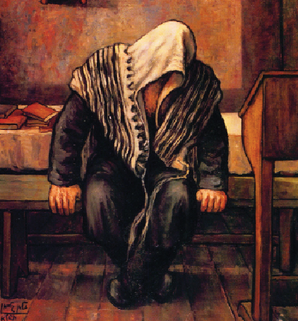

א החסיד ר’ פסח מאלאסטאווקער - על שם עירו נקרא בכינוי זה - היה חסיד גדול, עמקן נפ
החסיד ר’ פסח מאלאסטאווקער - על שם עירו נקרא בכינוי זה - היה חסיד גדול, עמקן נפלא בחסידות, ‘עובד’ ובעל מידות תרומיות. את כוח תפיסתו המעמיק ניצל כדי להעמיק בדרושי חסידות ובמאמרים שזכה ושמע מפי רבותינו נשיאנו.

החסיד ר’ פסח מאלאסטאווקער - על שם עירו נקרא בכינוי זה - היה חסיד גדול, עמקן נפלא בחסידות, ‘עובד’ ובעל מידות תרומיות. את כוח תפיסתו המעמיק ניצל כדי להעמיק בדרושי חסידות ובמאמרים שזכה ושמע מפי רבותינו נשיאנו.
ארבעה מרבותינו נשיאינו זכה ר’ פסח לראות ולהסתופף בצלם, החל מאדמו”ר הזקן, אצלו היה מצעירי החסידים; המשיך והיה מחסידיו של אדמו”ר האמצעי ומזקני החסידים בשנות נשיאותו של אדמו”ר ה”צמח צדק”. בחמש השנים האחרונות לחייו, זכה להתקשר אל בנו אדמו”ר מהר”ש.
חריף היה מתולדתו; כל סברא שחידש, הופרכה מיד על ידו בגלל חידוש של סברא עמוקה יותר. יכול היה לשבת שעות ארוכות ולהתעמק ברעיונות חסידות ששמע, לעיין ולהתבונן בהם, ונפשו לא ידעה שובע. מספרים כי פעם נכנס ל’זאל’ בליובאוויטש. לפתע פתאום נעמד על מקומו ומבטו ננעץ בשעון הקיר. כך עמד על מקומו במשך שעה ארוכה כשהוא מתבונן. אחר כך היסב פניו אל ר’ נחום ה’חוזר’ (ה’חוזר’ של אדמו”ר ה”צמח צדק”) ואמר: “זה עתה התיישב לי הדרוש ששמעתי מהרבי לפני חמש שנים”…
את כוח העמקה שבו ניחן, ניצל גם לעבודת התפילה. מדי יום היה מתפלל במשך שעות ארוכות עד למיצוי הנפש, כשהוא נותן את כל כוחותיו להתדבק בקונו מתוך עבודת ה’ בלתי מתפשרת.
למרות גדלותו הרוחנית הכבירה, ר’ פסח לא שימש כרב בעירו, זאת כנראה מפאת מדת ההצטנעות שבה בלט. שנים מספר היה מלמד בחורים צעירים, עד שבאחד הימים קיבל הוראה מאדמו”ר ה”צמח צדק” לשמש כמשפיע בעירו. יש הגורסים כי פרנסתו הייתה מריחיים שהיו ברשותו, עמם היה טוחן קמח עבור תושבי עירו.
בעבודתו כמשפיע, ראה ברכה מרובה. “הסבריו של ר’ פסח מולוסטובקר במאמרי חסידות - עיקרם היה מהבריאה יש מאין וביטול היש לאין, ובענין ביטול העולמות”, סיפר לימים המשפיע ר’ שמואל גרונם אסתרמן. וכאשר היה ר’ פסח מדבר על ‘יש מאין’, היה מצליח להביא את שומעי לקחו לידי ראייה, עד שהשומעים יכלו לראות איך ה’יש’ נעשה חי על ידי ה’אין’ האלוקי…
היו בין החסידים שליחשו, כי ר’ פסח היה בעל מדרגה רוחנית הגובלת ברוח הקודש. השערה זו התבססה על כמה מקרים שבהם גילה זאת מבלי משים. כך אירע פעם, שכאשר עמד והתפלל, לא הרחק ממנו עמד בחור צעיר, שכנראה באותה שעה חשב מחשבות לא–ראויות. ר’ פסח חש בכך מיד, ופנה אל הבחור בתרעומת: “המחשבות זרות שלך לא מאפשרות לי להתפלל”, אמר.
בפעם אחרת ישב בעת סעודת פורים במחיצת חסידים, כשלפתע קרא בקול “אוי! מה קורה עם בערל שלי?!” אמר ולא יסף. הנוכחים במקום לא הבינו על מה הקריאה הזאת. רק כעבור שעות התברר, כי באותה שעה, עשה בנו בערל את דרכו לעיר ועבר דרך חורשת עצים עבותה. בהיותו שם בדד, התנפל עליו שודד דרכים והחל מכהו כדי ליטול את כספו. בערל לא טמן ידיו בכיסיו, ובהיותו בעל כוח השיב מלחמה שערה עד שהשודד נאלץ לברוח על נפשו. חישבו ומצאו כי קריאתו של האב הייתה בדיוק באותם רגעים בהם נלחם בערל על חייו בידיים חשופות מול שודד שביקש את כספו ונפשו.
עוד היו מספרים, כי בכל ערב שבת לפני מנחה, היו מגיעות אליו נשמות מעולם האמת כדי שיתקן אותן. והוא היה שולח אותן לידידו הקרוב ר’ הלל מפאריטש.
למרות דרגותיו הנעלות, היה ר’ פסח בעל מידות תרומיות, רגיש וקשוב לענינים שסביבו.
ב
היה זה יום שגרתי לכאורה, בו פסע ר’ פסח ברחובה של מלסטובקה עירו, וכדרכו מעמיק בעניני חסידות, ממריא במחשבותיו לספירות גבוהות, מתעצם בדרגות רוחניות שהעסיקו את מוחו כהנה וכהנה.
לפתע פתאום שמע זעקה חנוקה, הייתה זו זעקה של נערה יהודיה שהלכה ברחוב וידיים גסות של חייל מתעלל אחזו בה בלפיתת ברזל אימתנית. בשניות אחדות הספיק ר’ פסח להבין במה מדובר, ומבלי להסס, קפץ קפיצה נחושה לעבר החייל, תפס בידו והיכה בו ללא הרף, עד שהלה נאלץ היה לשחרר את לפיתתו מהנערה. זו ניצלה את הרגע, וברחה מהמקום כל עוד נפשה בה, חיוורת וחסרת נשימה. היא הספיקה להגיע למקום נסתר ולהתחבא בו עד יעבור זעם.
משראה ר’ פסח שהנערה הספיקה לברוח, הבין פתאום את גודל הסכנה בה הוא שרוי; יהודי חלש מול חייל גברתן, חיית טרף על שתיים. בהיסח הדעת רגעית מצד החייל, הרים ר’ פסח את רגליו ונס מן המקום במהירות לעבר ביתו.
ר’ פסח הבין כי החייל לא יבליג על עלבונו, וכי עלול הוא לשוב ולחפשו. הוא מיהר אפוא לעליית הגג בביתו, שם דחק ונכנס מתחת לחבית הפוכה, התחבא שם בתקווה כי לא יאונה לו כל רע.
כפי ששיער, כך אכן אירע. לא חלפה שעה ארוכה, וקול מגפיהם המסומרות של החיילים נשמע ברחוב המוביל לביתו. כעבור זמן קצר נפרצה הדלת בכוח איתנים, ואל הבית נכנסה קבוצת חיילים ובראשה החייל הפגוע. הם חיפשוהו בכמה מקומות, אך אחד התושבים אולץ להסגיר את מקום ביתו של החסיד הדגול הזה, שמסר את נפשו בעבור נערה יהודיה תמימה.
החיילים החלו להפוך את רהיטי הבית במטרה למצוא את ה”פושע” שהעז להתעמת עם אחד משלהם. הם לא הותירו דבר במקומו. בעטו בחפצים, הרסו רהיטים ושיברו בחמתם כל מה שעמד מולם.
אחד החיילים עלה גם לעליית הגג, וחיפשו שם - אך לא מצאו. חמתו בערה בו והוא נטל מוט ברזל כשגולת עופרת בראשו, ובחמה שפוכה הכה על כל הנקרה בידו, בשברו את החפצים שמסביב. בין השאר הכה גם בחבית תחתיה התחבא ר’ פסח. העץ הרעוע של החבית לא עמד בעוצמת המכה, וגולת הברזל חדרה פנימה והכתה היישר בראשו של ר’ פסח, מכה אנושה.
בשל יכולתו השכלית העצומה, התאפק ר’ פסח ומפיו לא נמלטה אף לא זעקה חנוקה. הוא נשך את שפתיו והתפלל שבכך יסתיים העניין והחיילים יסתלקו מן המקום. חלקה העליון של חבית העץ התפורר לכפיסי עץ קטנים שהתפזרו לכל רוח, אך החייל לא טרח להציץ פנימה…
כתת החיילים שלא מצאו את מבוקשם, עזבו את הבית כועסים ונרגנים.
ר’ פסח נשאר מתחת לחבית עוד זמן מה, עד שהיה בטוח שהחיילים אכן עזבו את הבית. רק אז הרשה לעצמו לצאת מתחת החבית ולטפל בראשו המדמם.
בטיפול מסור של בני משפחתו, נעצר הדם השותת. חלפו עוד ימים אחדים וגם הפגיעה הישירה בראש הלכה והתרפאה קמעה קמעה.
אולם הפגיעה האנושה ביותר הייתה בכוח הזיכרון. למרבה הכאב התברר כי מחמת המכה, איבד ר’ פסח הגאון את כוח הזיכרון שלו, אותו זיכרון שאצר בחובו מאות מאמרי חסידות עמוקים, פניני שיחות ששמע מרבותינו נשיאנו, ותורה רחבה מני–ים שלמד במשך השנים.
בהבינו כי אין ארוכה לאסונו הגדול, נסע בצר לו לליובאוויטש, אל חצרו של אדמו”ר ה”צמח צדק”, שברכו ברכה מיוחדת, ובאורח נס ופלא חזר כוח זכרונו. לא היה מאושר יותר מר’ פסח, שעה שכל התורה שהגה בה במשך השנים, חזרה לראשו כמונחת בקופסה, ושוב יכול היה להתעמק ברעיונות חסידות נשגבים, ולצלול לדקויות של הסברים באצילות, בריאה ובשאר ספירות מרוממות.
ג
שנים אחדות חלפו, והחיים נמשכו כתיקונם. יום אביבי היה אותו יום של חודש ניסן תרכ”ו. ניצני אביב החלו ללבלב בעיר מלסטובקה למרות השלוליות הבוציות שמילאו כל פינה. ר’ פסח כדרכו ישב מול כתת תלמידים מקשיבים ולימדם דא”ח. בפנים נלהבות העמיק בהסברים מתוך השורות הקטנות והצפופות, כתבי יד של מאמרי רבותינו. משוש חייו.
לפתע התעוותו פניו בכאב נורא.
״אוי רביס!” זעק לפתע.
הוא לפת את ראשו בשתי ידיו, כמו מחזיק את עצמו שלא לצלול תהומות.
התלמידים הביטו בו פעורי פה. נדהמים חסרי–מילים.
לא חלפה שעה ארוכה, והתברר כי מידת הדין פגעה בר’ פסח, ובאופן תמוה איבד שוב לפתע את כוח זיכרונו. כל תלמודו צלל לתהומות באבחת כאב אחת; ברגע בודד בו נפער חור שחור שאין לו סוף…
לא חלפו ימים אחדים, והתברר שבדיוק באותו רגע הסתלקה לשמי רום נשמתו של אדמו”ר ה”צמח צדק”. עדת חסידי ליובאוויטש נותרה יתומה ושבורת–לב, כצאן ללא רועה. אבלו של ר’ פסח היה כפול, שכן התברר שברכתו המיוחדת והנדירה שבירכו הרבי, ליוותה אותו רק עד לאותו יום, ועם הסתלקותו של הרבי, הסתלקה עמו גם הברכה.
מאז ועד סוף ימיו סבל ר’ פסח משכחה. לא היה גבול לצערו העמוק, אך עם זאת, מעולם לא נתן לייאוש להפילו בפח יוקשים של עצבות. אדרבא, מדי בוקר היה מגיע לבית הכנסת, ולאחר הכנות ארוכות שערך, היה מתחיל להתפלל לאט ובמתינות, כפי שהורגל כל חייו.
עם זאת, בסיום תפילתו שנמשכה שעות ארוכות, היה לוקח את התפילין, מניחם שוב על זרוע–ידו ולטוטפות בין עיניו, ואחר מתחיל להתפלל מחדש כאילו לא התפלל עד כה. שמא שכח שהתפלל? אכן כך. אנשי בית המדרש שהכירו את רום גדולתו של חסיד ושבחו, היו מזכירים לו בעדינות שזה עתה סיים את תפילתו ואין צורך שיתפלל שוב, ור’ פסח היה מביט בהם בעיניים בוחנות, כמו בודק את רצינות דבריהם, ורק משהשתכנע ברצינות כוונתם, היה נענה ומקבל.
פעם היו ממתפללי בית המדרש שאזרו עוז ושאלו אותו על כך, ור’ פסח השיב במתק לשונו: ״אולי שכחתי שכבר התפללתי היום, אבל לעולם לא אשכח שאני צריך להתפלל!…״
חמש שנים חי ר’ פסח, בעל המחשבה המעמיק, במצב זה, עד שנפטר בחודש כסלו תרל”א.